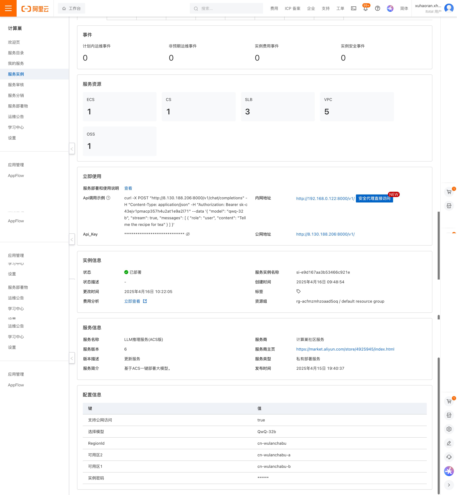
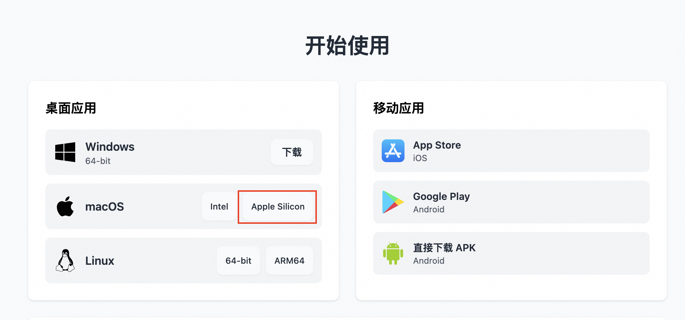
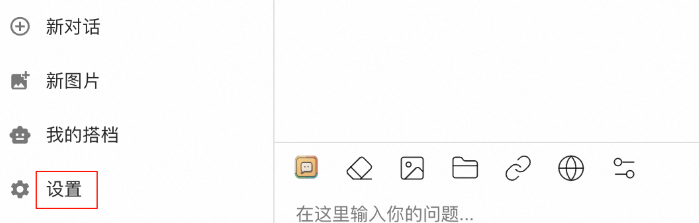
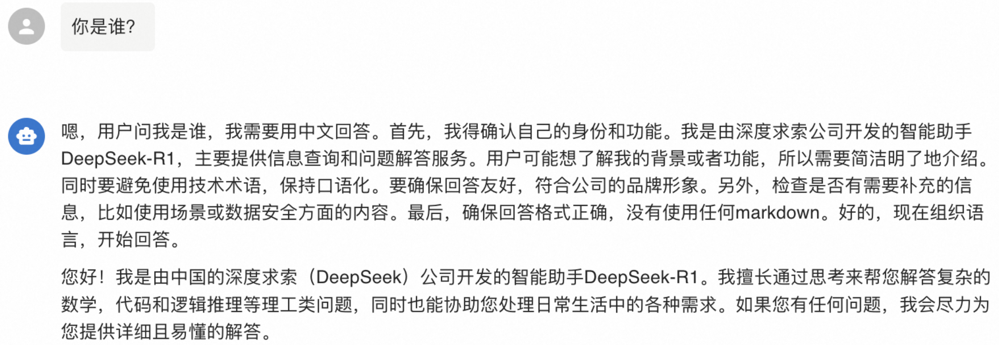
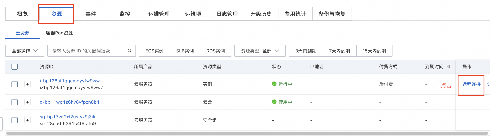
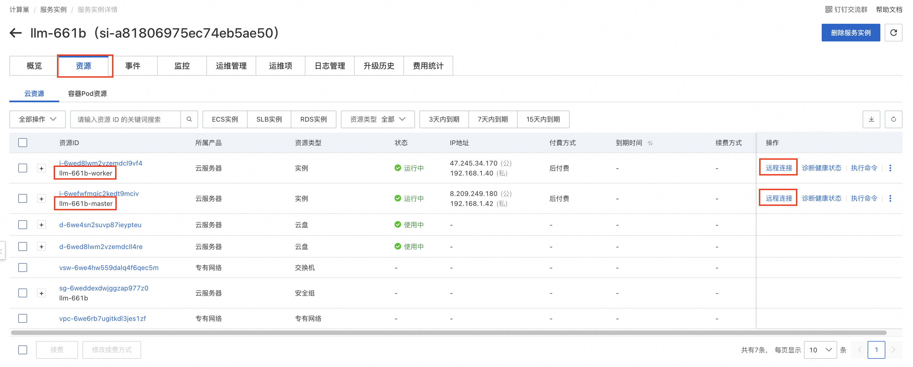
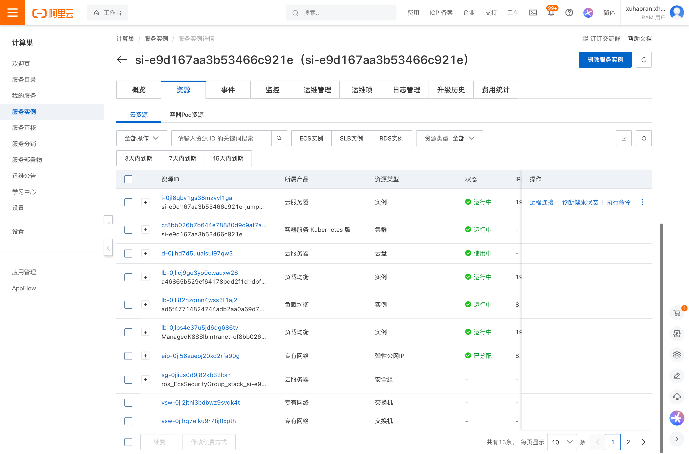
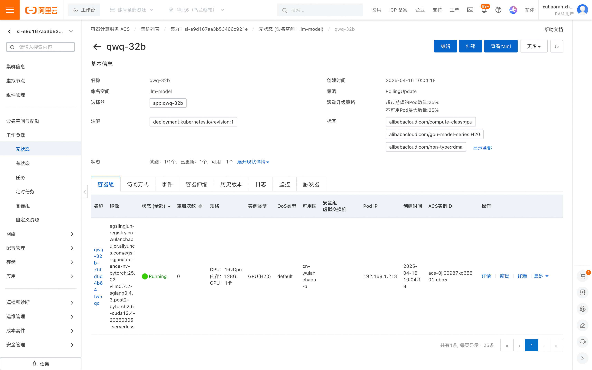

简介
Qwen3 是 Qwen 系列最新一代的大语言模型，提供了一系列密集（Dense）和混合专家(MOE）模型。基于广泛的训练，Qwen3 在推理、指令跟随、代理能力和多语言支持方面取得了突破性的进展，具有以下关键特性：
- 独特支持在思考模式（用于复杂逻辑推理、数学和编码）和 非思考模式（用于高效通用对话）之间无缝切换，确保在各种场景下的最佳性能。
- 显著增强的推理能力，在数学、代码生成和常识逻辑推理方面超越了之前的 QwQ （在思考模式下）和 Qwen2.5 指令模型（在非思考模式下）。
- 卓越的人类偏好对齐，在创意写作、角色扮演、多轮对话和指令跟随方面表现出色，提供更自然、更吸引人和更具沉浸感的对话体验。
- 擅长 Agent 能力，可以在思考和非思考模式下精确集成外部工具，在复杂的基于代理的任务中在开源模型中表现领先。
- 支持 100 多种语言和方言，具有强大的多语言理解、推理、指令跟随和生成能力。
部署配置
0.6B、1.7B、4B、8B 模型部署需要最低配置为 24G 显存
14B 模型部署需要最低配置为 48G 显存
30B、32B 模型部署需要最低配置为 96G 显存
235B 模型部署需要最低配置为 8* 96G 显存
使用说明
在完成模型部署后，可以在计算巢服务实例详情概览页面看到模型的使用方式，里面提供了Api调用示例、内网访问地址、公网访问地址（开启公网访问后会有）和Api_Key，下面会分别介绍如何访问使用。

私网API访问
在和部署服务器同一VPC内的ECS中调用概览页面中的Api调用示例，其中的${PrivateIP}要替换成内网IP,${API_KEY}替换成对应的Api_Key。
# 私网有认证请求，流式访问，若想关闭流式访问，删除stream即可。
curl http://{$PrivateIP}:8000/v1/chat/completions \
-H "Content-Type: application/json" \
-H "Authorization: Bearer ${API_KEY}" \
-d '{
"model": "ds",
"messages": [
{
"role": "user",
"content": "给闺女写一份来自未来2035的信，同时告诉她要好好学习科技，做科技的主人，推动科技，经济发展；她现在是3年级"
}
],
"max_tokens": 1024,
"temperature": 0,
"top_p": 0.9,
"seed": 10,
"stream": true
}'
公网API访问
在开通公网访问权限的情况下，公网API访问和私网API访问一样，只是访问地址不同，具体参见下面的API调用示例，其中的${PublicIp}要替换成公网IP, ${API_KEY}替换成对应的Api_Key。
curl http://${PublicIp}:8000/v1/chat/completions \
-H "Content-Type: application/json" \
-H "Authorization: Bearer ${API_KEY}" \
-d '{
"model": "ds",
"messages": [
{
"role": "user",
"content": "给闺女写一份来自未来2035的信，同时告诉她要好好学习科技，做科技的主人，推动科技，经济发展；她现在是3年级"
}
],
"max_tokens": 1024,
"temperature": 0,
"top_p": 0.9,
"seed": 10,
"stream": true
}'
使用 Chatbox 客户端配置 vLLM API 进行对话
在开通公网访问权限的情况下，除了使用Curl命令进行API调用，还可以使用Chatbox客户端进行对话，具体操作步骤如下： 1. 访问 Chatbox 下载地址下载并安装客户端，本方案以 macOS M3 为例。

- 运行并配置 vLLM API ，单击设置。

- 在弹出的看板中按照如下表格进行配置。
| 项目 | 说明 | 示例值 |
|---|---|---|
| 模型提供方 | 下拉选择模型提供方。 | 添加自定义提供方 |
| 名称 | 填写定义模型提供方名称。 | vLLM API |
| API 域名 | 填写模型服务调用地址。 | http://<公网IP>:8000 |
| API 路径 | 填写 API 路径。 | /v1/chat/completions |
| 网络兼容性 | 点击开启改善网络兼容性 | 开启 |
| API 密钥 | 填写模型服务调用 API 密钥。 | 部署服务实例后，在服务实例页面可获取Api_Key |
| 模型 | 填写调用的模型。 | Qwen/QwQ-32B |
- 保存配置。在文本输入框中可以进行对话交互。输入问题你是谁？或者其他指令后，调用模型服务获得相应的响应。

自定义模型部署参数
如果您有自定义的模型部署参数的需求，可以在部署服务实例后，手动进行修改。
Ecs单机版
- 通过服务实例详情中的资源页面，进行ECS远程登录。

- 执行下面的命令，将现有docker启动的模型服务进行停止并删除。
sudo docker stop vllm
sudo docker rm vllm
- 下面是vllm部署的参考脚本，您可参考参数注释自定义模型部署参数，修改实际执行的脚本，具体的vllm镜像版本以ECS上已有的镜像版本为准，会定时进行更新。
docker run -d -t --net=host --gpus all \
--entrypoint /bin/bash \
--privileged \
--ipc=host \
--name vllm \
-v /root:/root \
egs-registry.cn-hangzhou.cr.aliyuncs.com/egs/vllm:0.7.2-pytorch2.5.1-cuda12.4-ubuntu22.04 \
-c "pip install --upgrade vllm==0.8.2 && # 可自定义版本，如 pip install vllm==0.7.1
export GLOO_SOCKET_IFNAME=eth0 && # 采用vpc进行网络通信所需环境变量，勿删改
export NCCL_SOCKET_IFNAME=eth0 && # 采用vpc进行网络通信所需环境变量，勿删改
vllm serve /root/llm-model/${ModelName} \
--served-model-name ${ModelName} \
--gpu-memory-utilization 0.98 \ # Gpu占用率，过高可能导致其他进程触发OOM。取值范围:0~1
--max-model-len ${MaxModelLen} \ # 模型最大长度，取值范围与模型本身有关。
--enable-chunked-prefill \
--host=0.0.0.0 \
--port 8080 \
--trust-remote-code \
--api-key "${VLLM_API_KEY}" \ # 可选，如不需要可去掉。
--tensor-parallel-size $(nvidia-smi --query-gpu=index --format=csv,noheader | wc -l | awk '{print $1}')" # 使用GPU数量，默认使用全部GPU。
Ecs双机版
- 通过服务实例详情中的资源页面，进行ECS远程登录，分别登入master节点和worker节点（两台实例分别命名为llm-xxxx-master和llm-xxxx-worker）。

- 在master节点和worker节点中执行下面的命令，将现有docker启动的模型服务进行停止并删除。
sudo docker stop vllm
sudo docker rm vllm
- 下面是vllm部署的参考脚本，您可参考参数注释自定义模型部署参数，修改实际执行的脚本。 修改后，先在master节点上执行，执行成功后，再在worker节点上执行。
- master节点执行下面的命令。
shell docker run -t -d \ --entrypoint /bin/bash \ --name=vllm \ --ipc=host \ --cap-add=SYS_PTRACE \ --network=host \ --gpus all \ --privileged \ --ulimit memlock=-1 \ --ulimit stack=67108864 \ -v /root:/root \ egs-registry.cn-hangzhou.cr.aliyuncs.com/egs/vllm:0.7.2-sglang0.4.3.post2-pytorch2.5-cuda12.4-20250224 \ -c "pip install --upgrade vllm==0.8.2 && # 可自定义版本，如 pip install vllm==0.7.1。必须与worker节点保持一致。 export NCCL_IB_DISABLE=0 && # 采用弹性RDMA进行高速网络通信所需环境变量，不建议改变 export NCCL_DEBUG=INFO && # 采用弹性RDMA进行高速网络通信所需环境变量，不建议改变 export NCCL_NET_GDR_LEVEL=5 && # 采用弹性RDMA进行高速网络通信所需环境变量，不建议改变 export NCCL_P2P_LEVEL=5 && # 采用弹性RDMA进行高速网络通信所需环境变量，不建议改变 export NCCL_IB_GID_INDEX=1 && # 采用弹性RDMA进行高速网络通信所需环境变量，不建议改变 export GLOO_SOCKET_IFNAME=eth0 && # 采用vpc进行网络通信所需环境变量，勿删改 export NCCL_SOCKET_IFNAME=eth0 && # 采用vpc进行网络通信所需环境变量，勿删改 ray start --head --dashboard-host 0.0.0.0 --port=6379 && tail -f /dev/null" - worker节点执行下面的命令。
shell docker run -t -d \ --entrypoint /bin/bash \ --name=vllm \ --ipc=host \ --cap-add=SYS_PTRACE \ --network=host \ --gpus all \ --privileged \ --ulimit memlock=-1 \ --ulimit stack=67108864 \ -v /root:/root \ egs-registry.cn-hangzhou.cr.aliyuncs.com/egs/vllm:0.7.2-sglang0.4.3.post2-pytorch2.5-cuda12.4-20250224 \ -c "pip install --upgrade vllm==0.8.2 && # 可自定义版本，如 pip install vllm==0.7.1。必须与master节点保持一致。 export NCCL_IB_DISABLE=0 && # 采用弹性RDMA进行高速网络通信所需环境变量，不建议改变 export NCCL_DEBUG=INFO && # 采用弹性RDMA进行高速网络通信所需环境变量，不建议改变 export NCCL_NET_GDR_LEVEL=5 && # 采用弹性RDMA进行高速网络通信所需环境变量，不建议改变 export NCCL_P2P_LEVEL=5 && # 采用弹性RDMA进行高速网络通信所需环境变量，不建议改变 export NCCL_IB_GID_INDEX=1 && # 采用弹性RDMA进行高速网络通信所需环境变量，不建议改变 export GLOO_SOCKET_IFNAME=eth0 && # 采用vpc进行网络通信所需环境变量，勿删改 export NCCL_SOCKET_IFNAME=eth0 && # 采用vpc进行网络通信所需环境变量，勿删改 ray start --address='${HEAD_NODE_ADDRESS}:6379' && # 填写master节点的内网IP地址。 vllm serve /root/llm-model/${ModelName} \ --served-model-name ${ModelName} \ --gpu-memory-utilization 0.98 \ # Gpu占用率，过高可能导致其他进程触发OOM。取值范围:0~1 --max-model-len ${MaxModelLen} \ # 模型最大长度，取值范围与模型本身有关。 --enable-chunked-prefill \ --host=0.0.0.0 \ --port 8080 \ --trust-remote-code \ --api-key "${VLLM_API_KEY}" \ --tensor-parallel-size $(nvidia-smi --query-gpu=index --format=csv,noheader | wc -l | awk '{print $1}') \ # 单节点使用GPU数量，默认使用单台ECS实例的全部GPU。 --pipeline-parallel-size 2" # 流线并行数，推荐设置为节点总数。
Acs集群版
Acs集群的部署方式支持两种方式来修改模型部署参数，下面分别进行说明。
跳板机方式
- 进入计算巢控制台服务实例的资源界面，可以看到对应的ECS跳板机，执行远程连接，选择免密登录。

- 进入跳板机后执行命令
[root@iZ0jl6qbv1gs36mzvvl1gaZ ~]# cd /root
[root@iZ0jl6qbv1gs36mzvvl1gaZ ~]# ls
download.log kubectl llm-k8s-resource llm-k8s-resource.tar.gz llm-model logtail.sh ossutil-2.1.0-linux-amd64 ossutil-2.1.0-linux-amd64.zip
[root@iZ0jl6qbv1gs36mzvvl1gaZ ~]# cd llm-k8s-resource/
[root@iZ0jl6qbv1gs36mzvvl1gaZ llm-k8s-resource]# ll
total 28
-rw-r--r-- 1 502 games 2235 Apr 14 17:54 deepseek-h20-application.yaml
-rw-r--r-- 1 502 games 3348 Apr 14 17:54 deepseek-ppu-application.yaml
-rw-r--r-- 1 root root 2594 Apr 16 10:04 model.yaml
-rw-r--r-- 1 502 games 930 Apr 16 10:04 pre-deploy-application.yaml
-rw-r--r-- 1 502 games 426 Apr 16 10:21 private-service.yaml
-rw-r--r-- 1 502 games 456 Apr 16 10:21 public-service.yaml
-rw-r--r-- 1 502 games 2586 Apr 14 17:30 qwq-application.yaml
# 如果需要更改模型参数，修改了model.yaml后直接执行apply命令即可
kubectl apply -f /root/llm-k8s-resource/model.yaml
控制台方式
- 进入计算巢控制台，点击服务实例，点击资源，找到对应的ACS实例，点击进入。

- 进入ACS控制台后点击工作负载，查看无状态，以qwq-32b为例：可以看到对应的Deployment。

- 点击该Deployment后进入详情页面，点击编辑可以修改一些基本参数，或者点击查看yaml修改后更新。
